자기비파괴검사산업기사(구) (2008-03-02 기출문제)
1과목: 자기탐상시험원리
1. 자화전류의 파형 중 삼상전파정류의 모양으로 가장 유사한 것은?
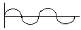
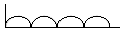
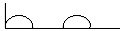
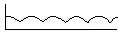
(정답률: 알수없음)

2. 막대자석(Bar magnet)에서 형성되는 자력선의 성질에 대하여 틀린 것은?
- S극에서 나와 N극으로 들어간다.
- 닫힌 회로를 형성한다.
- 서로 교차하지 않는다.
- 극에서 멀수록 밀도가 감소한다.
(정답률: 알수없음)
3. 자분탐상시험 후 제품에 남아 있는 잔류자장으로 인한 영향이 아닌 것은?
- 회전제품의 경우 회전을 방해
- 페인팅이나 도금 행위를 방해
- 용접 후 열처리 불량의 원인 제공
- 2차 자분탐상시험시의 탐상을 방해
(정답률: 알수없음)
4. 자분검사액을 장시간 반복 사용하면 자분의 분산상태가 나빠져 분산매가 열화된다. 열화의 내용으로 틀린 것은?
- 시험체에 대하여 적심성이 나빠진다.
- 자분이 쪼개져 자분형성이 나빠진다.
- 자분 자체가 자화되어 분산성이 나빠진다.
- 자분 첨가제인 계면활성제에 기름 등의 불순물 흡착으로 성능이 나빠진다.
(정답률: 알수없음)
5. 자속밀도를 나타내는 단위는?
- C/m2
- V/m2
- Wb/m2
- A/m2
(정답률: 알수없음)
6. 침투탐상검사법과 비교한 자분탐상검사법의 장점이 아닌 것은?
- 표면 직하의 결함 검출이 가능하다.
- 검사 후 탈자를 실시해야 하는 장점이 있다.
- 침투탐상보다는 정밀한 전처리가 요구되지 않는다.
- 얇은 도장 및 도금된 시험체에도 검사가 가능하다.
(정답률: 알수없음)
7. “두 자극사이에 작용하는 힘은 두 자극의 세기의 곱에 비례하고, 두 자극 사이의 거리의 제곱에 반비례한다.” 는 법칙은?
- 렌쯔의 법칙
- 암페어의 법칙
- 쿨롱의 법칙
- 비오-사바르의 법칙
(정답률: 알수없음)
8. 알루미늄합금으로 제작되어 사용 중인 항공기 부품의 피로균열 발생 여부를 확인하기 위하여 비파괴검사를 수행하려 한다. 다음 중 가장 적합한 검사 방법은?
- 방사선투과검사
- 초음파탐상검사
- 자분탐상검사
- 침투탐상검사
(정답률: 알수없음)
9. 전처리는 자분탐상시험 결과에 큰 영향을 미치는 공정이다. 다음 중 전처리의 목적과 가장 거리가 먼 것은?
- 탐상시험에 관계되는 조작으로부터의 시험체 손상을 방지한다.
- 예상되는 결함을 사전에 제거하여 시험을 쉽게 한다.
- 결함부에 자분의 부착량을 늘리게 할 수 있어 결함자분모양의 관찰을 쉽게 한다.
- 결함 이외의 부분에 부착되는 자분의 양을 줄여 자분모양의 관찰을 용이하게 한다.
(정답률: 알수없음)
10. 다음 중 투자율(Permeability, μ)을 나타내는 식으로 옳은 것은? (단, H : 자계의 세기, B : 자속밀도, I : 전류치)
- μ = H × B
- μ = H/B
- μ = B/H
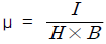
(정답률: 알수없음)
11. [그림]의 자화곡선에서 Bs는 무엇을 나타내는 것인가?
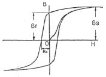
- 포화자속밀도
- 잔류자속밀도
- 항자력
- 잔류자기
(정답률: 알수없음)
12. 그림 중 봉강을 교류를 사용한 축통전법으로 자화시 자계의 분포를 나타낸 것으로 가장 적합한 것은?
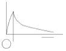
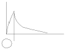
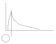
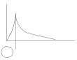
(정답률: 알수없음)
13. 시험체의 외경이 203㎜ 인 관제품을 전류관통법(중심도체법)으로 자화할 때 요구되는 자화전류(A)값으로 적절한 것은?
- 1000
- 5000
- 10000
- 50000
(정답률: 알수없음)
14. 다음 중 자분탐상시험을 적용하기 가장 적합한 대상물은?
- 동 주조품
- 마그네슘 주조품
- 알루미늄 주조품
- 철강 주조품
(정답률: 알수없음)
15. 자분탐상시험시 자분 모양에 영향을 미치는 요인으로 가장 관계가 먼 것은?
- 자화방법
- 시험체의 크기
- 불연속의 크기 및 형태
- 자장(자계)의 방향과 강도
(정답률: 알수없음)
16. 습식 연속법으로 자분탐상시험할 때, 현탁자분의 적용시기로 가장 적절한 것은?
- 전류를 통전시키기 직전
- 전류를 통전하고 있는 동안
- 전류를 통전한 후 단락시킨 직후
- 전류를 통전시킨 직후 1~2초 만
(정답률: 알수없음)
17. [보기]에서 형광자분을 사용하는 자분탐상시험에 요구되는 것들을 모두 나열한 것은?
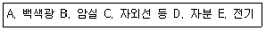
- A, B, C, D
- B, D
- A, C, D, E
- B, C, D, E
(정답률: 알수없음)
18. 자성체가 자력을 제거한 후에도 재료 내에 잔류자기를 유지하려는 성질을 나타내는 용어는?
- 자성
- 항자력
- 보자성
- 투자성
(정답률: 알수없음)
19. 프로드법으로 검사할 때 프로드 간격에 대한 설명으로 옳은 것은?
- 간격은 최대 152㎜(6“)를 초과하지 않아야 한다.
- 간격은 최대 203㎜(8“)를 초과하지 않아야 한다.
- 간격은 최대 254㎜(10“)를 초과하지 않아야 한다.
- 간격은 최대 3⑤㎜(12“)를 초과하지 않아야 한다.
(정답률: 알수없음)
20. 자분탐상시험의 감도는 결함이 자계와 어떤 위치일 때 최대가 되는가?
- 자속선 흐름 방향과 수평으로 되어 있을 때
- 자화 전류 흐름과 직각을 이룰 때
- 자속선의 흐름 방향과 직각을 이룰 때
- 자화 전류 흐름과 경사지게 만날 때
(정답률: 알수없음)
2과목: 자기탐상검사
21. 자분탐상검사에서 원형자화시 전류의 크기를 결정하는 인자는?
- 시험체의 크기, 형상 및 밀도
- 시험체의 두께, 투자성 및 보자성
- 시험체의 직경, 자속밀도 및 투자율
- 시험체의 투자성, 보자성 및 항자력
(정답률: 알수없음)
22. 자분탐상검사로 외경 50㎜, 길이 600㎜, 두께 6㎜인 강관에 있는 균열 결함을 찾고자 중심도체법을 적용할 때 필요한 전류값(A)은 약 얼마인가?
- 600~800
- 800~1000
- 1400~1800
- 2000~2400
(정답률: 알수없음)
23. 일반적으로 코일법으로 1회에 시험할 수 있는 시험체의 한계 길이는?
- 18인치
- 25인치
- 30인치
- 36인치
(정답률: 알수없음)
24. 다음 중 자분이 갖추어야 할 특성이 아닌 것은?
- 높은 투자성을 가질 것
- 낮은 보자성을 가질 것
- 유동성과 분산성이 높을 것
- 교류전류에서 표피효과가 클 것
(정답률: 알수없음)
25. 다음 중 자화조작 단계에 해당하지 않는 것은?
- 전처리방법의 선정
- 자화방법의 선정
- 통전시간의 결정
- 자화전류의 종류와 전류값의 선정
(정답률: 알수없음)
26. 자분적용시 자화시기에 따른 자분탐상검사법의 분류로 옳은 것은?
- 직류법, 맥류법
- 건식법, 습식법
- 관통법, 극간법
- 연속법, 잔류법
(정답률: 알수없음)
27. 자분탐상검사 후 후처리 방법으로 적당하지 않는 것은?
- 탈자종료 후에는 탈자의 정도를 확인한다.
- 시험체에는 필요에 따라 방청처리를 해둔다.
- 습식자분의 경우는 걸레로 잘 닦아낸 후 용제 등을 사용하여 제거한다.
- 시험체에 직접 전류를 흘려 자화한 경우 아크 발생부에는 도장(칠)을 하여야 한다.
(정답률: 알수없음)
28. 기름에 분산시킨 검사액을 자분탐상검사에 사용할 때 일반적으로 사용되는 분산매는?
- 백등유
- 경유
- 가솔린
- 중유
(정답률: 알수없음)
29. 대형 주강품을 자화시켜 검사할 때 가장 적합한 자화방법 및 자분적용 방법은?
- 극간법 및 습식자분
- 축통전법 및 건식자분
- 프로드법 및 건식자분
- 전류관통법 및 습식자분
(정답률: 알수없음)
30. 다음 중 비접촉법에 의한 자화장치에 해당하는 것은?
- 축통전법
- 코일법
- 프로드법
- 직각통전법
(정답률: 알수없음)
31. 코일을 감은 철심을 시험체의 누설자기의 발생붑 즉, 자극부에 착탈하는 것에 의해 잔류자기를 검지하며 자극의 극성 판별 등을 하는 자기계측기는?
- 가우스미터
- 자속계
- 자기컴파스
- 간이형 자기검출기
(정답률: 알수없음)
32. 시험체의 표면에 균열과 같은 선형결함이 있을 경우 자분모양은 일반적으로 어떻게 나타나는지 가장 적절한 것은?
- 넓고 희미하게 나타난다.
- 방사상으로 희미하게 나타난다.
- 아주 뚜렷하게 나타난다.
- 시험체의 축방향으로 길게 초생달 모양으로 나타난다.
(정답률: 알수없음)
33. 다음 중 미세한 표면균열의 검출에 가장 적합한 자화전류는?
- 직류
- 교류
- 반파직류전류
- 반파정류전류
(정답률: 알수없음)
34. 규격에 별도의 지시가 없을 때 최정적인 자분탐상검사의 시기로 가장 옳은 것은?
- 최정 열처리 실시 전 아무 때나
- 최종 가공 및 열처리가 완료된 후
- 최종 가공이 완료된 후, 최종 열처리가 실시되기 전
- 최종 가공이 완료되기 전, 최종 열처리가 실시된 후
(정답률: 알수없음)
35. 대형 탱크의 강용접부를 자분탐상검사할 때 가장 효율적으로 적용할 수 있는 검사 방법은?
- 축통전법
- 극간법
- 전류관통법
- 유도전류법
(정답률: 알수없음)
36. 강용접부를 자분탐상검사 하였을 때 모재와 용접비드가 접하는 부분에 모재가 지나치게 녹아서 홈이나 오목부분이 생겨 용접비드를 따라 단속적인 선형지시가 나타났다면, 이 지시모양을 무엇이라 하는가?
- 터짐
- 언더컷
- 용입부족
- 융합불량
(정답률: 알수없음)
37. 강판의 누설자속탐상검사시 적합한 주사 방식은?
- 탐상 헤드를 정지시키고, 시험체를 회전시킨다.
- 탐상 헤드를 직진시키고, 시험체를 회전시킨다.
- 탐상 헤드를 회전시키고, 시험체를 직진시킨다.
- 탐상 헤드를 정지시키고, 시험체를 직진시킨다.
(정답률: 알수없음)
38. 다음 중 원형자화를 이용한 자화방법이 아닌 것은?
- 극간법
- 프로드법
- 직각통전법
- 자속관통법
(정답률: 알수없음)
39. 다음 중 반자성체가 아닌 재질은?
- 수은(Mercury)
- 알루미늄(Aluminum)
- 금(Gold)
- 비스무스(Bismuth)
(정답률: 알수없음)
40. 길이(L)/직경(D)의 비가 3인 강봉을 10회 감은 코일법으로 검사시 필요한 전류(A)는?
- 1500
- 3000
- 4500
- 45000
(정답률: 알수없음)
3과목: 자기탐상관련규격및컴퓨터활용
41. 철강 재료의 자분탐상 시험방법 및 자분모양의 분류(KS D0213)에서 장치, 자분, 검사액의 성능과 연속법에서의 시험체 표면의 유효자계 강도 및 방향, 탐상유효범위, 시험조작의 적합 여부를 조사하기 위한 표준시험편으로 옳은 것은?
- A형
- B형
- D형
- E형
(정답률: 알수없음)
42. 보일러 및 압력용기에 대한 자분탐상검사(ASME Sec. V Art. 7)에 의해 프로드법으로 탐상할 경우 시험체가 두께 10㎜, 가로 200㎝, 세로 100㎝, 프로드 간격이 100㎜(≒ 4인치)일 때 자화전류의 세기(A)는 약 얼마인가?
- 200
- 400
- 600
- 800
(정답률: 알수없음)
43. 철강 재료의 자분탐상 시험방법 및 자분모양의 분류(KS D0213)에서 자화전류의 종류 선택시 고려하여야 할 사항 중 틀린 것은?
- 충격전류 사용시 연속법에 한한다.
- 교류 사용시 원칙적으로 연속법을 쓴다.
- 직류 사용시 연속법 및 잔류법을 사용할 수 있다.
- 교류 사용시 원칙적으로 표면 결함 검출에 적용한다.
(정답률: 알수없음)
44. 보일러 및 압력용기에 대한 표준자분탐상검사(ASME Sec. V Art. 25 SE-709)의 탈자에 대한 설명이다. 틀린 것은?
- 3[Oe] 이하로 탈자하여야 한다.
- 잔류자기가 계측장치에 영향을 줄 경우는 탈자가 필요하다.
- 잔류자기가 이후의 기계가공에 영향을 줄 때는 탈자가 필요하다.
- 검사 후 100℃ 이하로 열처리할 경우에는 탈자가 필요 없다.
(정답률: 알수없음)
45. 철강 재료의 자분탐상 시험방법 및 자분모양의 분류(KS D0213)에서 탐상시험 기록의 기호표시로 틀린 것은?
- 교류 : ~
- 직류 : -
- 충격전류 : ∧
- 맥류 : Ⓐ
(정답률: 알수없음)
46. 철강 재료의 자분탐상 시험방법 및 자분모양의 분류(KS D0213)에서 가느다란 요철부에 생기는 누설자속에 따라 형성되는 자분모양과 자분이 오목부에 고여 생기는 의사모양은 무엇이라 하는가?
- 재질경계지시
- 표면거칠기지시
- 자극지시
- 단면급변지시
(정답률: 알수없음)
47. 보일러 및 압력용기에 대한 자분탐상검사(ASME Sec. V Art. 7)에서 탐상시 특별히 규정하지 않는 한 시험표면에서 인접거리의 최소 얼마 정도까지 표면을 전처리 하여야 하는가?
- 12.7㎜(0.5인치)
- 25.4㎜(1인치)
- 38.1㎜(1.5인치)
- 50.8㎜(2인치)
(정답률: 알수없음)
48. 철강 재료의 자분탐상 시험방법 및 자분모양의 분류(KS D0213)에서 그림과 같은 자화법을 무슨 자화법이라고 하는 가?
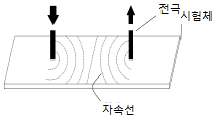
- 프로드법
- 극간법
- 축통전법
- 코일법
(정답률: 알수없음)
49. 철강 재료의 자분탐상 시험방법 및 자분모양의 분류(KS D0213)에 의한 통전시간의 설명으로 틀린 것은?
- 잔류법으로 원칙적으로 1/4~1초로 한다.
- 연속법은 원칙적으로 1/2~1초로 한다.
- 충격전류의 경우에는 1/120초 이상으로 한다.
- 충격전류의 경우 3회 이상 통전을 되풀이하는 것으로 한다.
(정답률: 알수없음)
50. 철강 재료의 자분탐상 시험방법 및 자분모양의 분류(KS D0213)에 따라 연속한 자분모양으로 분류한 기준의 배경과 가장 거리가 먼 것은?
- 여러 개의 자분모양이 거의 동일 직선상에 있었다.
- 최소 2개 이상의 자분모양이 발견되었다.
- 자분모양간 거리가 2개 중 긴 쪽 길이보다 작게 떨어져 있어서 합한 값을 연속한 길이로 하였다.
- 자분모양의 길이는 각각의 길이 및 서로의 거리가 2㎜이하로 떨어져 있어서 합한 값으로 하였다.
(정답률: 알수없음)
51. 보일러 및 압력용기에 대한 자분탐상검사(ASME Sec. V Art. 7)에서 기하학적으로 접근하는데 제한이 있거나, 강도를 증가시키기 위해 프로드 간격을 좁히는 경우가 있으나 프로드 주변에 자분이 모이는 것을 막기 위해서 얼마 이하로는 프로드 간격을 좁히지 못하도록 하는가?
- 1인치
- 2인치
- 3인치
- 4인치
(정답률: 알수없음)
52. 보일러 및 압력용기에 대한 자분탐상검사(ASME Sec. V Art. 7)에 대한 내용 중 틀린 것은?
- 전류계를 부착한 자화장치는 적어도 2년에 한번 교정하여야 한다.
- 시험은 연속법으로 한다.
- 전처리 범위는 검사면과 최소 1인치 이내의 인접부위로 한다.
- 각 시험부위에 대해 적어도 2번에 시험이 이루어져야 한다.
(정답률: 알수없음)
53. 보일러 및 압력용기에 대한 표준자분탐상검사(ASME Sec. V Art. 25 SE-709)에 의거 습식자분의 품질관리시험 중 비형광자분 현탁액의 농도를 측정하는 경우, 자분의 제조자가 달리 규정하지 않는 한 현탁액 100㎖ 중 비형광자분의 적정 침전용량은 얼마로 규정하고 있는가?
- 0.1~0.5㎖
- 0.5~1.0㎖
- 1.2~2.4㎖
- 3.0~3.5㎖
(정답률: 알수없음)
54. 보일러 및 압력용기에 대한 자분탐상검사(ASME Sec. V Art. 7)에 따라 탐상시험을 할 때 자계는 지시를 만족하게 발생시킬 수 있도록 충분한 강도를 가져야 한다. 홀효과 프로브(Hall effect probe)로 측정된 접선방향(tangential field)의 자계 강도로 적정한 범위는?
- 0.8~2.4kA/m(10~30G)
- 2.4~4.8kA/m(30~60G)
- 4.8~7.2kA/m(60~90G)
- 7.2~9.6kA/m(90~120G)
(정답률: 알수없음)
55. 보일러 및 압력용기에 대한 자분탐상검사(ASME Sec. V Art. 7)에 따라 오프셋(off set) 중심도체를 사용한 탐상시험에서 한번 자화에 따른 원주상에서의 한계 유효자화구역 설정으로 옳은 것은?
- 중심도체 지름의 2배 길이
- 중심도체 지름의 3배 길이
- 중심도체 지름의 4배 길이
- 중심도체 지름의 5배 길이
(정답률: 알수없음)
56. 웹서비스에서 제공되는 여러 가지 자원들에 대한 주소를 나타내는 것은?
- JAVA
- URL
- HTML
- XML
(정답률: 알수없음)
57. 도메인네임을 구성하는 영역 중 최상위 도메인의 종류와 그에 해당하는 기관명으로 옳지 않은 것은?
- edu - 교육기관
- org - 연구기관
- net - 네트워크 관련 기관
- gov - 정부기관
(정답률: 알수없음)
58. 컴퓨터에서 속도가 빠른 CPU와 속도가 느린 주기억장치 사이에 위치하여 동작속도를 빠르게 해주는 메모리는?
- 캐시 메모리
- 가상 메모리
- 플래시 메모리
- 자기코어 메모리
(정답률: 알수없음)
59. 인터넷에 접속하기 위해 사용하는 웹 브라우저가 아닌 것은?
- 쿠키(Cookie)
- 모자이크(Mosaic)
- 넷스케이프(Netscape)
- 인터넷 익스플로러(Internet Explorer)
(정답률: 알수없음)
60. 전자우편의 송ㆍ수신을 담당하며, 서버와 클라이언트 간에 메일을 전달하는 역할을 하는 것은?
- DNS
- PPP
- POP
- FTP
(정답률: 알수없음)
4과목: 금속재료 및 용접일반
61. 잠호용접이라고도 하며 용접법 중 입상의 미세한 용제를 사용하는 용접법은?
- 불활성가스 아크 용접
- 버트 용접
- 서브머지드 아크 용접
- 시임 용접
(정답률: 알수없음)
62. 다음 용접법중 저항용접에 속하는 것은?
- 프로젝션 용접
- 전자빔 용접
- 테르밋 용접
- 레이져 용접
(정답률: 알수없음)
63. 가스 절단 속도에 영향을 미치지 않는 것은?
- 절단산소의 압력
- 절단산소의 순도
- 강판의 두께
- 용기내의 가스압력
(정답률: 알수없음)
64. 다음 용접부 그림의 명칭 중 틀린 것은?
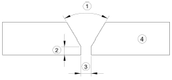
- ①:홈의 각도
- ②:홈의 깊이
- ③:루트 간격
- ④:모재
(정답률: 알수없음)
65. 맞대기용접, 필릿용접 등의 비드 표면과 모재와의 경계부에 발생되는 균열이며, 구속응력이 클 때 용접부 가장자리에서 발생하여 성장하는 균열은?
- 토 균열
- 설퍼 균열
- 루트 균열
- 헤어 크랙
(정답률: 알수없음)
66. 표점거리 50㎜, 인장시험후 표점거리가 60㎜일 경우 연신율은?
- 16.7%
- 20%
- 25%
- 33.3%
(정답률: 알수없음)
67. 잔류응력 완화법이 아닌 것은?
- 응력 제거 어닐링
- 그라인딩
- 저온 응력 완화법
- 피닝
(정답률: 알수없음)
68. 교류 용접기의 종류 4가지를 올바르게 나열한 것은?
- 가동철심형, 발전기형, 탭전환형, 가포화리액터형
- 가동철심형, 가동코일형, 탭전환형, 가포화리액터형
- 가동철심형, 가동코일형, 정류기형, 포화리액터형
- 가동철심형, 가동코일형, 탭전환형, 셀렌 정류기형
(정답률: 알수없음)
69. 피복 아크 용접봉 선택시 고려할 사항이 아닌 것은?
- 용접성
- 자동성
- 작업성
- 경제성
(정답률: 알수없음)
70. 탄산가스 아크 용접법의 분류에서 용극식 중 플럭스와이어 CO2법에 속하지 않는 것은?
- 아코스 아크법
- 텅스텐 아크법
- 퓨즈 아크법
- 유니언 아크법
(정답률: 알수없음)
71. 다음 중 실용되고 있는 형상기억 합금계가 아닌 것은?
- Co-Mn 계
- Ti-Ni 계
- Cu-Al-Ni 계
- Cu-Zn-Al 계
(정답률: 알수없음)
72. 0.5% 탄소강의 723℃ 선상에서의 pearlite 양은 몇 %정도인가?
- 37.5
- 42.5
- 57.5
- 62.5
(정답률: 알수없음)
73. 다음 중 금속에 관한 일반적 설명으로 틀린 것은?
- 수은을 제외한 금속은 상온에서 고체상태의 결정구조를 갖는다.
- 전성 및 연성이 좋고, 금속 고유의 광택을 갖는다.
- 강자성체 금속으로는 Fe, Co, Ni 등이 있다.
- 순금속은 합금에 비해 경도가 높다.
(정답률: 알수없음)
74. 응고 과정에서 결정이 나뭇가지 모양으로 이루어진 결정 조직은?
- 수지상결정
- 주상결정
- 편상결정
- 구상결정
(정답률: 알수없음)
75. 오스테나이트계(austenite type) 스테인리스강에서 입계부식(intergranular corrosion)을 방지하기 위한 대책이 아닌 것은?
- 탄소의 함량을 0.03% 이하로 낮게 한 것을 사용한다.
- 1000~1150℃로 가열하여 탄화물을 고용시킨 후 급랭하는 고용화열처리를 한다.
- Cr 탄화물을 가능한 많이 석출시켜 스테인리스강이 예민화(sensitize)되도록 한다.
- 탄소와의 친화력이 Cr 보다 큰 Ti, Nb 등을 첨가해서 안정화 시킨다.
(정답률: 알수없음)
76. 심한 가공이나 주조하여 만든 Cu 합금은 사용 중 혹은 저장 중에 자연균열(season crack)이 일어난다. 이 균열의 방지법으로 틀린 것은?
- 표면에 도료를 칠한다.
- 표면에 아연도금을 한다.
- 암모니아가스 분위기속에 저장해 둔다.
- 185~260℃의 범위에서 가열하여 응력을 제거한다.
(정답률: 알수없음)
77. [그림]과 같은 격자결함은? (단, 점선으로 표시된 원자는 격자사이로 끼어 들어가는 상태를 그린 것이다.)
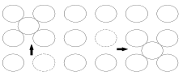
- 점결함(point defect)
- 선결함(line defect)
- 면결함(plane defect)
- 체적결함(volume defect)
(정답률: 알수없음)
78. 다음 중 비정질 합금에 대한 설명으로 틀린 것은?
- 결정이방성이 없다.
- 구조적으로 장거리의 규칙성이 없다.
- 가공경화가 심하여 경도를 상승시킨다.
- 열에 약하며, 고온에서는 결정화하여 전혀 다른 재료가 된다.
(정답률: 알수없음)
79. 다음 열전대 중에서 가장 높은 온도를 측정할 수 있는 것은?
- 백금 - 백금ㆍ로듐
- 철 - 콘스탄탄
- 크로멜 - 알루멜
- 구리 - 콘스탄탄
(정답률: 알수없음)
80. 다음 중 대표적인 시효 경화성 합금은?
- Al-Cu-Mg-Mn 합금
- Cu-Zn 합금
- Cu-Sn 합금
- Fe-C 합금
(정답률: 알수없음)